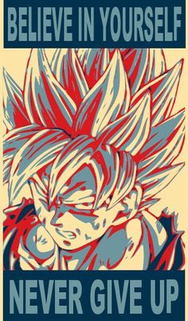
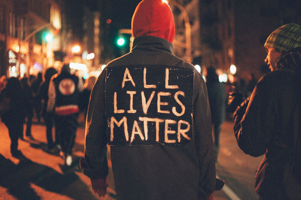
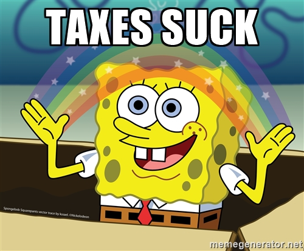

Im Way Better than the rest
Heres why you should choose me as the president over my competitors.
Watch this video and then vote for me!
I've learned from my father and other men that if you never give up you can become strong and accomplish everything here is one of those men Son Goku
What do i stand for, is what you may be asking yourself, well i stand for justice and equality for all gender and race. No more police shootings. higher taxes for the rich and less for the terribly poor, what america should be. I have your best interest at heart cause still have my childish innocence unlike some of you horrible adults. I will also make the world more awesome with putting money into research for cures to every illness and developing super powers.
It’s tough out there for a voter—candidates from both parties have a lot to say about countless topics. So we asked our readers what matters most to them and got the answers straight from the presidential hopefuls themselves.
If you choose me as your president i will lower taxes for all
Contact the White house because I've clearly already won this election because Im just that awesome! or Contact My personal asistance Im probably out being awesome!